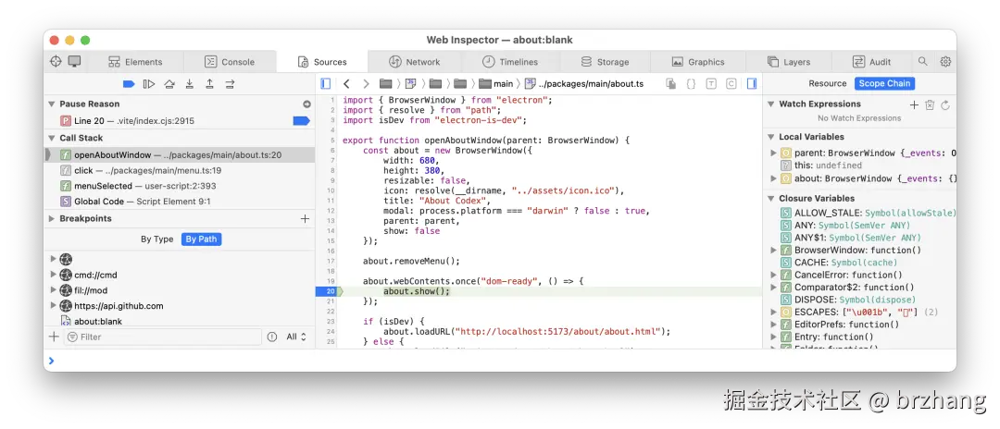

轻量桌面应用新星 Electrico
HaoTian · 2024-10-10 22:24:57
在桌面应用开发的世界里，Electron 曾经是一位风云人物。它让开发者可以用熟悉的 Web 技术构建跨平台应用，但它的重量级体积和系统资源的高消耗一直让人头疼。现在，一个新工具悄然登场，试图解决这些问题——Electrico，一个轻量版的桌面应用开发框架。

10MB 取代数百 MB，你不心动？
你有没有想过，是否能用更轻量的方式开发出与 Electron 相同功能的桌面应用？毕竟，虽然 Electron 确实强大，但它那几百 MB 的安装包和资源消耗对许多小型项目来说太过头了。如果你对这些问题感到无奈，Electrico 或许是你一直在等待的解决方案。它的安装包仅仅 10MB 左右，去掉了庞大的 Node.js 和 Chromium，但依然能给你带来熟悉的开发体验。
什么是 Electrico？
Electrico 是一个基于 Rust 的轻量化桌面应用开发框架，完全省去了 Node.js 和 Chrome 内核的依赖。Rust 编写的 Wry 库替代了 Electron 的核心，利用系统自带的 WebView 组件，保持跨平台兼容性。同时，Electrico 还能与操作系统直接交互，提升了运行效率。未来可期的好处是 API 完全贴近 electron，这可能对原 electron 开发者会比较友好。
这一切听起来可能有点像技术术语，但如果你想象一下：Electron 是一个庞大的精装房，而 Electrico 则是一间简单却功能齐全的小公寓。虽然面积小，但该有的功能一点也不少。
三大亮点：为什么 Electrico 值得关注？
极致轻量化：从几百 MB 到 10MB 的飞跃 Electron 的打包体积问题一直是开发者头疼的地方，尤其是当你只需要开发一个简单的工具时，最终却要交付一个几百 MB 的安装包。而 Electrico 的体积仅 10MB 左右，这样极致的轻量化使得它尤其适合资源有限的应用场景，如内部工具或简单的桌面应用。
性能提升：用 Rust 打造高效体验 Rust 作为新兴的系统编程语言，因其安全性和性能闻名。Electrico 选择了 Rust 作为核心，这不仅使得应用更加高效，还让内存管理更加安全。尤其是在需要高性能、低延迟的场景下，Electrico 展现了其独特的优势。与 Electron 依赖的 V8 引擎和 Chromium 相比，Electrico 能够更直接地与系统交互，减少了许多不必要的资源消耗。
- 兼容性好：熟悉的开发体验 开发者的最大顾虑之一，通常是新工具是否需要重新学习。而 Electrico 则保留了许多 Electron 的 API 设计，比如窗口管理和文件系统访问等。这意味着，习惯 Electron 的开发者几乎不需要额外学习，就能快速上手。同时，Electrico 支持现代浏览器的开发者工具，前后端的调试体验也非常流畅。
实际开发中的表现
为了帮助开发者更快上手，Electrico 提供了一个开源示例项目，让你可以直接体验它的运行效果。这个项目采用了 Codex，一个轻量级的笔记应用。通过简单的配置和打包，你可以将 Codex 运行在 Electrico 上，而最终生成的应用包体积比起 Electron 版本要小得多。虽然目前 Electrico 只实现了部分 Electron API，但它已经足够应对大多数日常应用场景。

比如，如果你开发的是一个简单的笔记工具、待办事项管理应用，或是一个内部的管理面板，Electrico 都能帮你快速构建出符合需求的桌面应用。没有繁琐的依赖管理，也没有巨大的安装包拖慢你的用户体验。
对比 Electron：未来的发展趋势
不得不承认，Electron 凭借其强大的生态和广泛的支持，依然在桌面应用开发领域占有重要地位。尤其是对于那些需要集成大量第三方库、复杂业务逻辑的应用，Electron 仍然是首选。但 Electrico 的出现，标志着开发者可以在不同场景下有更多选择。
对于那些不需要复杂依赖、注重性能和体积的小型应用，Electrico 无疑是一个更现代、更轻便的选择。它展示了桌面应用开发的新趋势——极致轻量化和性能至上，正是未来开发工具追求的方向。
绝对值得一试的新选择
如果你正在寻找一种比 Electron 更轻量、更高效的解决方案，Electrico 无疑值得一试。特别是当你对现有工具的体积和性能表现不满时，Electrico 能够带来焕然一新的体验。最重要的是，它的学习成本几乎为零，你可以很快将现有的 Electron 项目迁移到 Electrico 上，享受同样的开发便利，却不再担心过大的应用包和资源消耗。